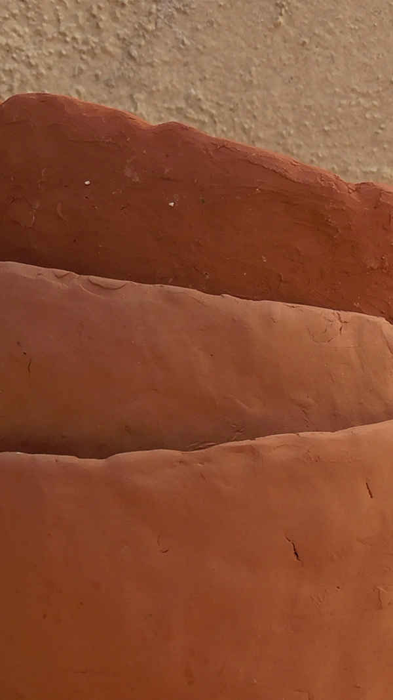
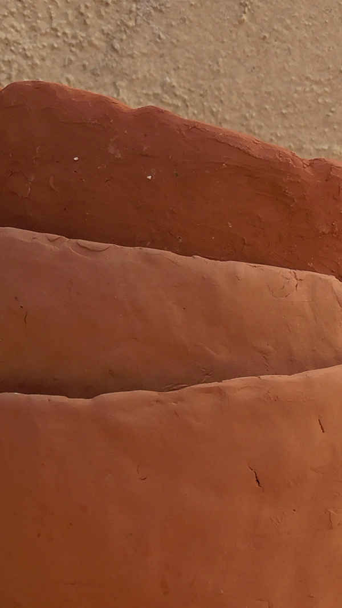

2022 . Faenza, Castel Raniero, Castelmerlo, Emilia Romagna
Così ho cercato per tutta l’estate, per tutta l’Italia, un ceramista che avesse voglia di adottare due forti braccia ;
Sono finita a Deruta, a Urbino, e infine a Faenza, dove ho seguito una formazione che mi ha permesso di scegliere un artista con cui lavorare e imparare.
Intanto facevo la cameriera, e poi andavo a zonzo per verificare se la terra di Faenza si chiama così a buon diritto, ed, effettivamente, ti basta passeggiare sulla collina più vicina, raccogliere un po’ di terra dal sentiero, sputarci dentro e plasmare una sculturina. Con il mio innamorato e vfedele sostenitore, siamo quindi tornati lassù con zaini in spalla e palette e ci siamo portati a casa un po’ di terra, e l’abbiamo filtrata, modellata e cotta, ed era proprio terra di Faenza come quella che viene dall’Ucraina;
Poi in Belgio ne abbiamo raccolta dell’altra.
E i rossi erano ancora diversi, e davano altre sensazioni ancora sotto le mani.

 
